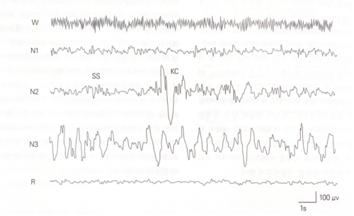

수면이란?
개요
성인의 수면은 크게 두 가지 상태로 나뉜다.
REM 수면
- 뇌파, 근전도, 안구운동에서 특징적인 패턴을 보임
- 꿈과 관련이 깊음
Non-REM 수면
- 뇌파 패턴에 따라 3단계(N1, N2, N3)로 세분화됨
- 특징적 뇌파: 수면방추파(sleep spindle), K-Complex, 고전압 느린파
성인 수면 단계와 특징

성인은 하루 중 약 2/3 동안 깨어 있다. 눈을 뜨고, 움직임 및 대화를 포함한 행동 신호는 각성을 나타낸다. 활동을 멈추고 기대어 눈을 감으면 뇌파에서 후두부 알파파가 나타나며, 졸리기 시작하면 알파파가 사라지고 느려진다. 대부분의 성인은 비렘수면을 통해 졸음 상태에서 수면으로 전환된다.
1. N1: 수면의 시작
- 각성에서 수면으로 전환되는 가장 얕은 단계
- 깨어나도 자신이 잤다는 것을 인식하지 못하는 경우가 많음
- EEG 특징: 30초 에폭 기준 50% 이상에서 세타파(4-7Hz)
- 눈 움직임: 느린 안구 운동(slow eye movement)
2. N2: 표준 수면
- 젊은 성인의 총 수면시간의 약 45-55% 차지
-
비렘수면의 뚜렷한 특징:
- 수면방추파 (Sleep Spindle): 11-16Hz, 0.5-2초, 머리마루전극 중심
- K-Complex: 음극파 뒤에 양극파, 전두엽에서 최대 진폭, 0.5초 이상
3. N3: 깊은 수면 / 서파 수면
- EEG 특징: 저주파(0.5-2Hz), 고진폭(>75μV) 델타파가 20% 이상
- 총수면의 약 10-20% 차지, 나이 들수록 감소
- 깨어나기 어려움, 수면 초기(전반부)에 더 많음
- 수면 후 각성 후 수면에 대한 욕구가 가장 강함
4. 렘수면 (REM Sleep, Stage R)
- 전체 수면의 약 18-23% 차지
-
특징 3가지:
- 뇌파: 저전압, 복합 패턴, 톱니파(sawtooth waves, 2-6Hz)
- 빠른 눈 움직임 (Rapid Eye Movement)
- 근전도: 대부분 근육의 무긴장 (Atonia)
- 꿈과 관련: 약 85%가 꿈을 꾸었다고 보고, 시각적·비논리적 내용 많음
- 기능: 유아 뇌발달, 근육 조정, 감정·창의성 관련